Bloom Scar Therapy
A 4th-generation regenerative needling therapy that pairs with skin boosters so your skin restores itself
Bloom Scar Therapy (Scar Bloom Therapy) Medical Bloom's Bloom Scar Therapy awakens the skin's intrinsic power to regenerate, filling deep scars left by acne, chickenpox, or surgery naturally with your own new tissue — a 4th-generation regenerative needling solution.
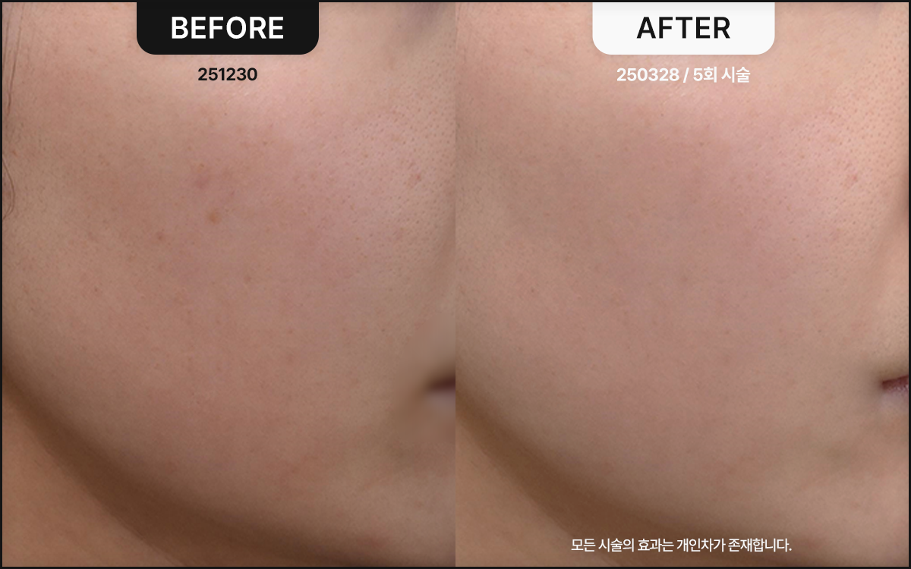

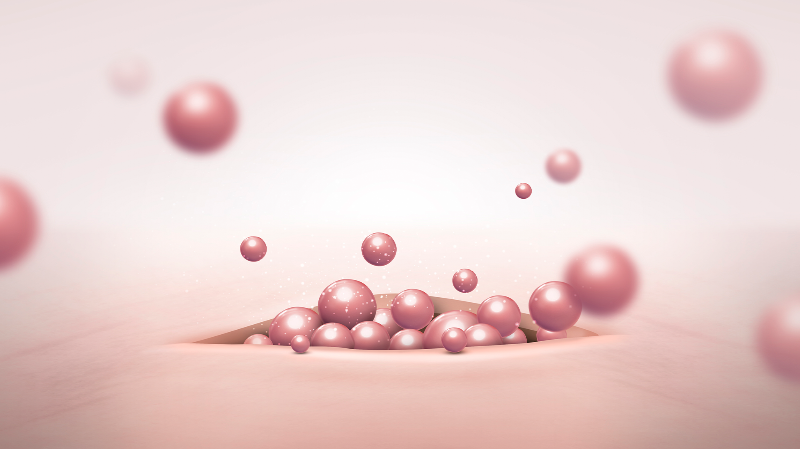
Scars — you no longer need to worry.
Your skin fills itself in.
MEDICAL BLOOM
Old scars —
why have they been so hard to treat?
But Bloom Scar Therapy is different — it does not shave the skin or inject artificial foreign substances, and with zero heat damage, it simply helps your skin regenerate on its own.
Respecting the skin's natural healing mechanism, we treat scars in a natural, safe way.
Most scars form when fibrous bands adhere deep within the skin, pulling the skin's surface downward.
This is why scars resist improvement, damaging skin tone and texture instead and eroding your confidence in your own face.
Conventional treatments often fail to address this root cause, or merely irritate the skin unnecessarily, delivering only temporary results — or nothing but disappointment.
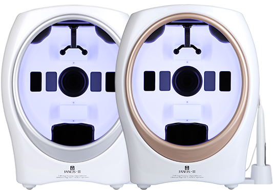
Bloom Scar Therapy —
perfection born of difference.
Bloom Scar Therapy goes beyond simple acupuncture — it is a refined meeting of modern medicine and Korean medicine.
[ POINT 01 ] Deep within the skin, regeneration begins.
Medical Bloom's specialized needles precisely release the fibrous tissue that anchors the scar.
This fine, delicate stimulation powerfully boosts the production of collagen and elastin in skin that has long stayed rigid, awakening the skin's dormant regenerative power to fill scarred areas densely and firmly.
At the same time, improved blood circulation leaves the skin healthier and firmer, and you will see scars gradually fade as the skin's surface becomes smoother.
[ POINT 02 ] Skin booster synergy — regenerative power unlike any needling therapy before.
PN Rebuilder Exosome Booster Ginsenosides Extracted from Wild Ginseng Medical Bloom's proprietary herbal skin boosters dramatically amplify the effects of Bloom Scar Therapy.
These premium skin boosters dramatically accelerate skin regeneration, quickly calm any post-treatment redness, and strengthen the skin barrier, helping your skin emerge healthier and firmer after treatment.
Beyond simply improving scars, it offers the experience of reclaiming your skin's naturally healthy, radiant beauty.
[ POINT 03 ] We don't diagnose by eye alone.
We improve scientifically, through 3D diagnostics.
Every scar is different. Medical Bloom is committed to customized treatment.
At your visit, an advanced 3D skin analyzer precisely measures scar depth, size, skin thickness, and even the characteristics of the surrounding skin — a detailed, scientific diagnosis.
Based on this data, we build a treatment plan designed only for you, and a skilled Korean-medicine doctor treats each and every scar precisely by hand.
Like a tailor cutting a bespoke suit, you'll feel certain you're receiving a premium prescription made 'just for you.'
Experience 1:1 personalized care with an artisan's delicate touch — not cookie-cutter, assembly-line treatment.
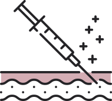
What can Bloom Scar Therapy do?
Improvement of Deep Scars
Acne scars (boxcar, ice pick, rolling, etc.), chickenpox marks, surgical scars, post-traumatic depressed scars, and more — every type of depressed scar is filled in smoothly and naturally.
With each treatment, scars become shallower and their borders with the surrounding skin fade — changes you can see with your own eyes.
Firm Pores, Silky-Smooth Texture As scars regenerate, enlarged pores tighten firmly, uneven skin texture becomes noticeably softer, and a healthy glow returns.
If pores are a particular concern, combining treatment with skin boosters delivers even more satisfying results.
Immediate Return to Daily Life Temporary redness or slight bruising may occur after treatment, but it can usually be covered with makeup — so you can return not only to daily routines but also to workouts and business trips without disruption.
A treatment that never weighs down your busy lifestyle.
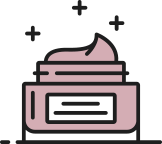
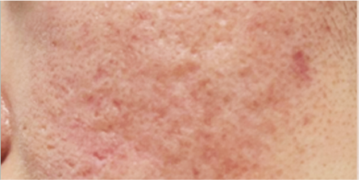
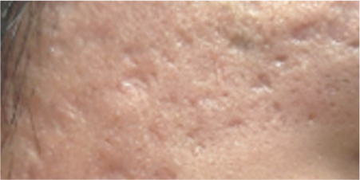
Depressed Acne Scars: Tailored Solutions by Area & Type
Among the many types of acne scars, find the Bloom Scar Therapy solution that fits you best.
Depressed Acne Scars on the Cheeks The cheeks are prone to a complex mix of scar types — boxcar, rolling, and ice pick.
Bloom Scar Therapy is performed precisely according to each scar's depth and shape. Boxcar and rolling scars tend to recover relatively quickly, while ice pick scars improve gradually with consistent treatment.
Depressed Acne Scars on the Temples The skin at the temples is thin and delicate, which can make scars stand out more. Taking this into account, we use especially gentle needle stimulation to induce collagen regeneration and softly blend the scar's edges into the surrounding skin for natural renewal.
Depressed Acne Scars on the Forehead and Between the Brows The forehead and the area between the brows often show scars intertwined with expression lines. Beyond regenerating the scars themselves, treatment also improves the elasticity of surrounding skin — effective for reclaiming a smooth, clear forehead.
Depressed Acne Scars on the Nose and Philtrum The nose and philtrum produce abundant sebum and often have enlarged pores, so scars and pore issues frequently appear together.
By simultaneously improving pin-like ice pick scars and slack pores, we refine the skin texture of the nose and philtrum to a smooth finish.
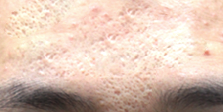
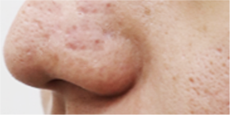
Surgical Scars and Other Depressed Scars
Beyond acne, Bloom Scar Therapy is effective for depressed scars from many causes as well as surgical scars.
01. Chickenpox Marks Depressed marks left by childhood chickenpox are filled with new tissue by Bloom Scar Therapy, restoring a naturally even skin texture.
02. Post-Traumatic Depressed Scars Depressed scars from accidents or injuries are also improved by releasing fibrous tissue within the skin and stimulating collagen regeneration for a smoother finish.
03. Surgical Scars For scars from appendectomy, C-section, and other surgeries, where the skin has become unevenly indented, Bloom Scar Therapy helps restore a height and texture similar to the surrounding skin. By releasing scar adhesions and boosting the skin's own regenerative power, it encourages a more natural recovery.
Pore Treatment:
Tightening enlarged pores,
perfecting silky-smooth skin Many people struggle with enlarged pores alongside acne scars.
In the course of treating scars, Bloom Scar Therapy also enhances the elasticity of surrounding skin and promotes collagen remodeling, effectively shrinking enlarged pores.
Pore Reduction Through Collagen Regeneration The micro-stimulation of the regenerative needles induces collagen and elastin production, firming slack pore walls and making skin tissue denser.
Texture-Refining Synergy Along with pore reduction, overall skin texture becomes softer and smoother.
Combined with Herbal Skin Boosters For serious pore concerns, herbal skin boosters such as the Pore Contactor can be combined with Bloom Scar Therapy to maximize pore tightening and elasticity improvement.
In one real case, a patient with a mix of enlarged pores and ice pick scars received 5 sessions of regenerative needling combined with 10 sessions of Pore Contactor, successfully improving both scars and pores.
Medical Bloom Bloom Scar Therapy: Before & After Photos
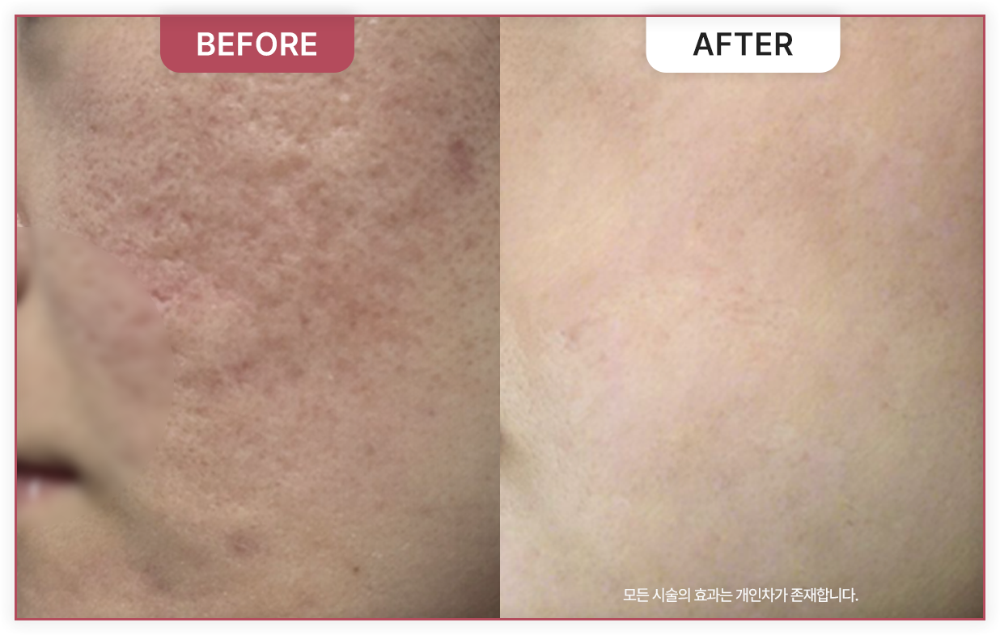
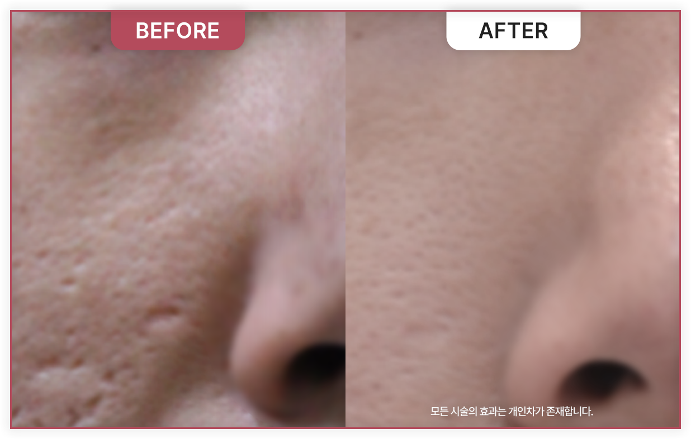
To bring you the healthiest form of beauty —
The Promise of Medical Bloom Korean Medicine Clinic
1:1 Skin Condition & Design Consultation
Through an in-depth consultation with our director, we carefully assess your areas of concern, skin condition, and unique skin characteristics. Considering both the beauty you envision and the condition of your face, we propose the personal face design that suits you best.
From Our Two Korean Medicine Directors,
Special Dedicated Care
From consultation to treatment, we care for your skin as if it belonged to our own family — with unmatched attention and delicacy. By bringing a Korean-medicine perspective to aesthetic skincare and adding stimulation of blood vessels and muscles, we achieve both health and beauty.
Healthy Beauty Without Side Effects
Your skin health and satisfaction are our highest priorities. To prevent any heartbreaking side effects after treatment, we take every precaution during examination and consultation, and insist on using only gentle, natural herbal ingredients for our herbal acupuncture injections and medicines.
Authentic Premium Devices and
Precisely Measured Treatments
Every device and product Medical Bloom uses is fully authentic, and each treatment is delivered in a customized, precise dose — never more, never less than your face needs.
Medical Bloom Korean Medicine Clinic